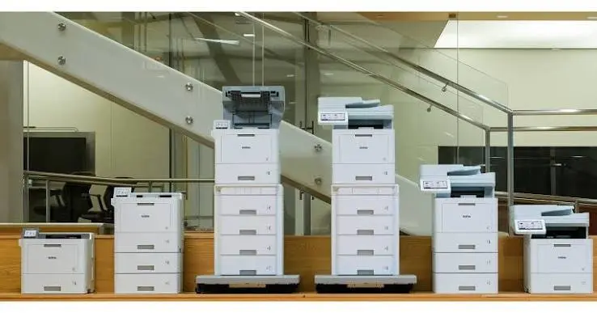
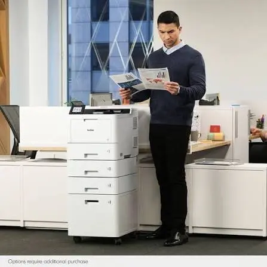
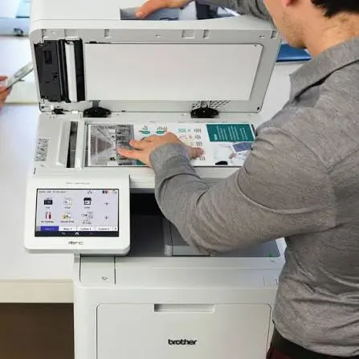
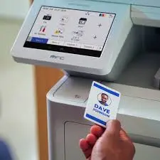

Desktop systems
Compact color and monochrome printers and multifunction systems for individual users, small teams, and everyday business output.
Brother Business Portfolio
Matrix provides Brother's full business line, from desktop and workgroup systems to scanning, mobile printing, labeling, and industrial applications.
Office & Workgroup
Brother systems can support an individual user, a shared workgroup, a department, or a distributed fleet without forcing every location into the same configuration.
Compact color and monochrome printers and multifunction systems for individual users, small teams, and everyday business output.
Higher-volume business printers and multifunction systems for active workgroups that need capacity, security, and dependable performance.
Desktop, workgroup, and mobile scanners selected around volume, document types, destinations, and capture workflow.
Brother Workhorse Series
The Workhorse line spans print-only and multifunction systems, color and monochrome output, and configurations for different teams and departmental demands. Matrix helps narrow the line by what users actually produce, how the device is shared, and what the organization expects after deployment.

Work in Context
The system should fit the user, the document, and the control required at that point in the workflow.



Operating Association
Full-page mobile printing for field service, public safety, transportation, and work away from a traditional office.
Desktop and mobile label systems for organization, identification, facilities, assets, and operational labeling.
Industrial thermal barcode and label printing for manufacturing, warehousing, logistics, compliance, and production workflows.
Explore TITAN with Matrix →Matrix will help narrow the Brother portfolio to the systems that fit the users, workload, environment, and support model.